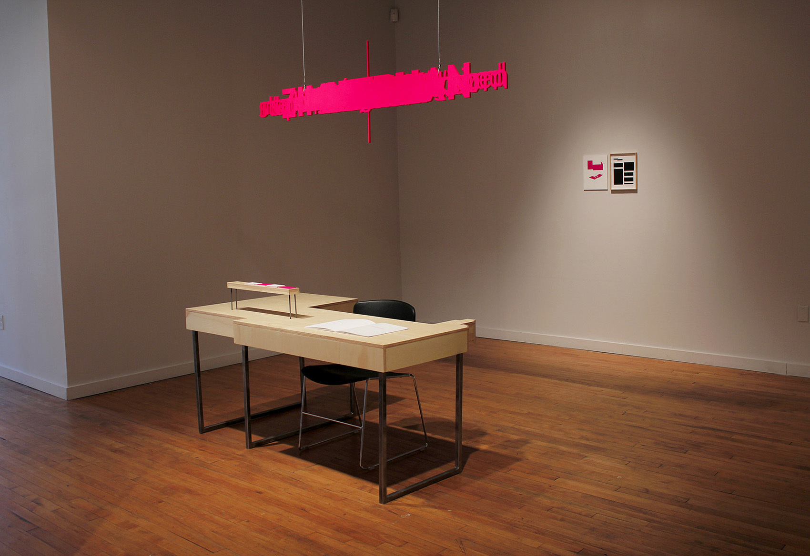
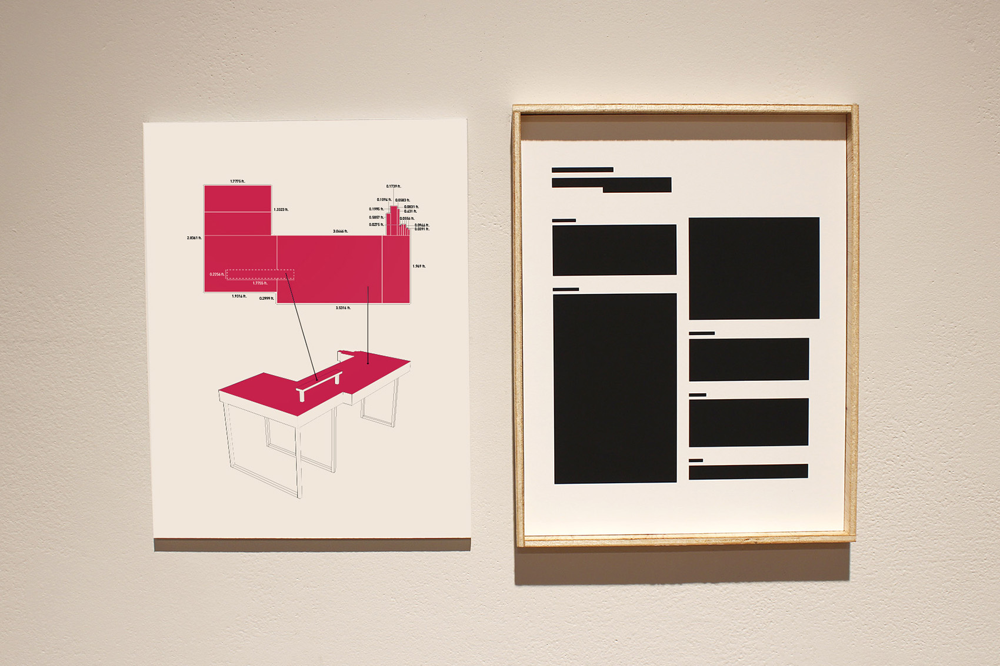
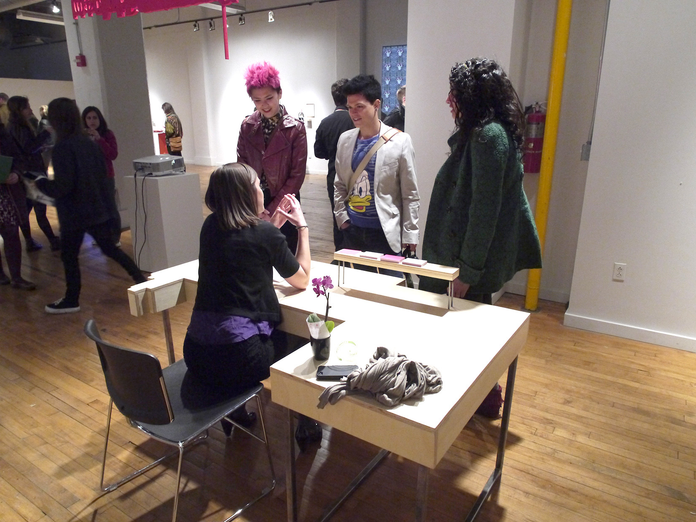

2013
Career Fair is an installation of multiple attempts to decode my professional resume by translating it into a variety of new forms—a score for a woodwind trio,
a blueprint for modernist furniture, a recipe, a map, a book of erasure poetry, a zoological index, and more.




Front Desk
Wood, steel, paint, paper
Parts [6]: Desk [29” x 65.5” x 37.5”], business cards [2” x 3.5”], pamphlet [11” x 8.5”],
hanging logo [21.5” x 72”], framed résumé [11” x 8.5”], infographic [11” x 8.5”]
The shape of the desk in Front Desk was derived from the arrangement of
text boxes in my résumé, combined into a single form. On the wall directly
behind the desk are two pieces: the right piece is a copy of my original
résumé with the text box shapes outlined in black, while the left piece is
an infographic illustrating how the text box arrangement was used to fabricate the desk.The logo hanging
above the desk was created by layering all the words from my résumé. The text on
the business cards comes from the contact information on my existing business card.
The poetic phrases in the pamphlet were composed using select words from my original résumé.
During the opening of Career Fair at the Des Lee Gallery in St. Louis, MO, I networked with
visitors, sharing an overview of my qualifications and handing out business cards.